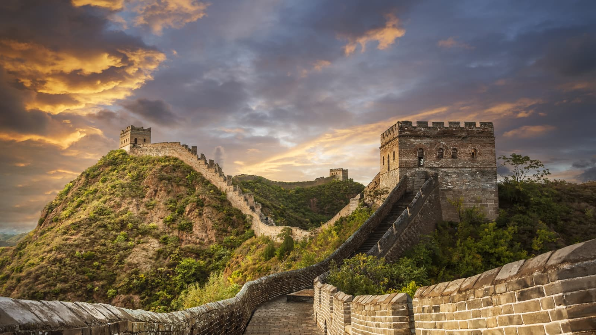

The Great Wall of China is one of the greatest historical monuments and architectural achievements in the world.
It is a powerful symbol of China’s long history, rich culture, national unity, and human determination.
Built over a period of more than 2,000 years, the Great Wall extends approximately 21,196 kilometers across northern China, passing through mountains, deserts, valleys, and grasslands.
The wall was originally constructed by different Chinese states to defend their territories from attacks, and after China was unified in 221 BC, Emperor Qin Shi Huang ordered many sections to be connected into a stronger defensive system.
Over time, several dynasties repaired, expanded, and improved the wall, especially the Ming Dynasty, which rebuilt many parts using bricks and stones that remain today.
The main purpose of the Great Wall was to protect China from invasions and provide security along the northern borders.
Besides defense, it helped control trade activities, protect the Silk Road, manage immigration, collect taxes, and improve communication between military stations.
Thousands of watchtowers, gates, fortresses, and beacon towers were built along the wall, allowing soldiers to monitor enemies and send warning signals over long distances.
The construction of the wall was an extremely difficult task that required the hard work and dedication of millions of soldiers, workers, and craftsmen.
They built the structure using materials such as stone, bricks, wood, and rammed earth while facing challenging weather conditions and difficult landscapes.
Today, the Great Wall of China is not only a historical defense structure but also a symbol of strength, courage, unity, and perseverance.
Its massive size, unique design, and incredible engineering continue to amaze people around the world.
In 1987, it was declared a UNESCO World Heritage Site because of its outstanding historical and cultural value, and it is also recognized as one of the New Seven Wonders of the World.
Famous sections like Badaling, Mutianyu, Jinshanling, and Simatai attract millions of tourists every year.
The Great Wall represents the creativity, intelligence, and determination of ancient Chinese civilization and remains one of the greatest achievements ever created by humans.
The history of the Great Wall of China dates back more than 2,000 years to ancient China.
The earliest sections of the wall were built during the 7th century BC by different Chinese states to protect their lands from invasions and attacks.
After China was unified in 221 BC, the first Emperor of China, Qin Shi Huang, ordered many existing walls to be connected and strengthened to create a larger defensive system.
This became the foundation of the Great Wall.
Over the following centuries, different Chinese dynasties repaired, expanded, and improved the wall according to their needs.
The Han Dynasty extended the wall to protect trade routes, especially the Silk Road, and to strengthen border security.
However, the most famous and well-preserved sections of the Great Wall were built during the Ming Dynasty (1368–1644).
The Ming rulers rebuilt the wall using strong materials like bricks and stones, adding watchtowers, gates, and fortresses to improve defense.
Building the Great Wall was a massive and challenging task that required the efforts of millions of soldiers, workers, and craftsmen.
They worked in difficult conditions across mountains and deserts, using simple tools and local materials.
The construction showed the determination, organization, and engineering skills of ancient Chinese civilization.
Today, the Great Wall of China stands as a remarkable symbol of history, strength, unity, and perseverance.
It has become one of the world’s most famous tourist attractions and was declared a UNESCO World Heritage Site in 1987.
The Great Wall continues to inspire people worldwide as a representation of human creativity and achievement.
The Great Wall of China was built mainly to protect ancient China from invasions by northern nomadic tribes and enemy armies. It served as a strong military defense, with watchtowers and forts where soldiers could guard the border. The wall was also used to send warning signals quickly through smoke and fire, helping armies communicate over long distances. In addition, it protected important trade routes such as the Silk Road, controlled the movement of people and goods, collected taxes at border gates, and symbolized the strength, unity, and determination of the Chinese people.
The Great Wall of China is a masterpiece of ancient engineering and architecture. It was built using materials such as stone, bricks, packed earth, wood, and lime mortar, depending on the region. The wall is generally 6–8 meters (20–26 feet) high and 4–5 meters (13–16 feet) wide, allowing soldiers and horses to move along the top. It includes thousands of watchtowers, beacon towers, forts, gates, and military barracks that were used for defense and communication. The wall follows the natural landscape, winding across mountains, hills, valleys, deserts, and plains, making it both a strong defensive barrier and one of the greatest architectural achievements in history.